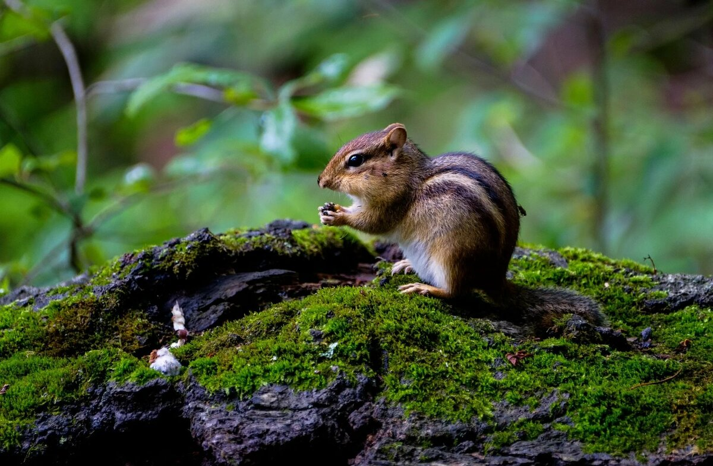
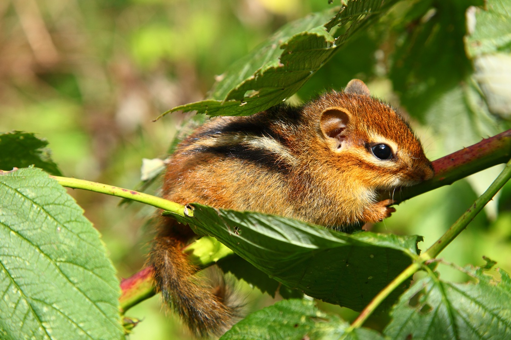

Где обитают бурундуки?
В России граница ареала проходит на севере Сибири по границе произрастания лиственницы, на северо-востоке с границей пихтовых лесов. На севере поднимается до 68° с. ш. распространяется по бассейну, доходя до устья, Енисея, Индигирки.
На западе и юге расширяется до Вологды, Ветлуги, спускается по левобережью Волги, захватывает правобережье Камы, Белой, огибая Урал доходит до Тары, озера Чаны, поворачивая на юг, захватывает Алтай, идет по южной границе страны. Далее встречается повсюду до самых восточных земель, включая острова, но не водится на Камчатке. За пределами России обитает в Монголии, Китае, Кореи, Японии.
В ареал Северной Америки входит большая часть востока от юга Канады до Мексиканского залива, исключая несколько регионов юго-востока. В горах Адирондака встречается на высотах до 1220 м. Там он предпочитает лиственные и смешанные леса и наиболее распространен в зрелых (старовозрастных) лиственных породах клена, бука.
Животное любит леса с множественным приростом, лесоповалами и буреломами, ягодниками. В Азии, в горах он поднимается до самой границы лиственично-кедрового редколесья и стланика. В чистых лесах, выбирает места с густой травой. Кое-где заселяет области лесостепей, занимая участки с кустарниками и в оврагах. Норы делает грызун на возвышенностях, в сухих местах, в каменистых россыпях.
 Источник